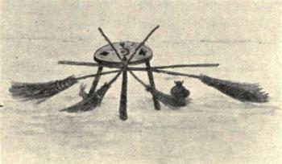
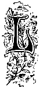
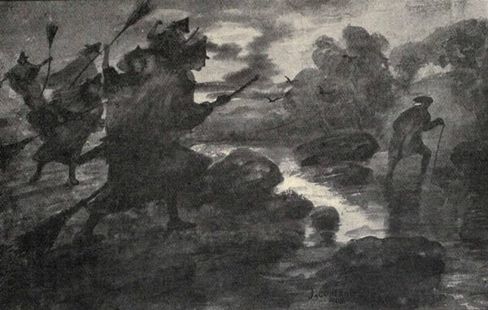
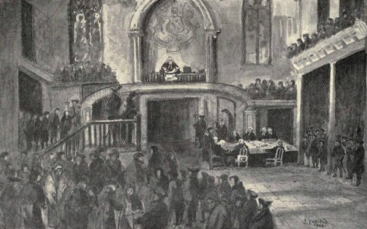

“In the pingle or the pan,
Or the haurpan o’ man,
Boil the heart’s-bluid o’ the tade,
Wi’ the tallow o’ the gled;
Hawcket kail an’ hen-dirt,
Chow’d cheese an chicken-wort,
Yallow puddocks champit sma’,
Spiders ten, and gellocks twa,
Sclaters twa, frae foggy dykes,
Bumbees twunty, frae their bykes,
Asks frae stinking lochens blue,
Ay, will make a better stue;
Bachelors maun hae a charm,
Hearts they hae fu’ o’ harm.”
The second, while of much the same character, has evidently more special reference to the weaker sex:—
“Yirbs for the blinking queen,
Seeth now, when it is e’en,
Boortree branches, yellow gowans,
Berry rasps and berry rowans;
Deil’s milk frae thrissles saft,
Clover blades frae aff the craft;
Binwud leaves and blinmen’s baws,
Heather bells and wither’d haws;
Something sweet, something sour,
Time about wi’ mild and door;
Hinnie-suckles, bluidy-fingers,
Napple roots and nettle stingers,
Bags o’ bees and gall in bladders,
Gowks’ spittles, pizion adders:
May dew and fumarts’ tears,
Nool shearings, nowt’s neers,
Mix, mix, six and six,
And the auld maid’s cantrip fix.”(24)
In Allan Ramsay’s pastoral play of the Gentle Shepherd a vivid word-painting occurs of the popular estimation of the witch methods and witch beliefs of the times.
The passage occurs where “Bauldy,” love-stricken and despairing, goes to seek the aid of “Mause,” an old woman supposed to be a witch:—
“’Tis sair to thole; I’ll try some witchcraft art.
········
Here Mausey lives, a witch that for sma’ price
Can cast her cantraips, and gie me advice,
She can o’ercast the night and cloud the moon,
And mak the deils obedient to her crune;
At midnight hours, o’er the kirkyard she raves,
And howks unchristen’d weans out of their graves;
Boils up their livers in a warlock’s pow,
Rins withershins about the hemlock low;
And seven times does her prayers backwards pray,
Till Plotcock comes with lumps of Lapland clay,
Mixt with the venom of black taids and snakes;
Of this unsonsy pictures aft she makes
Of ony ane she hates, and gars expire,
With slow and racking pains afore a fire,
Stuck fu’ of pins; the devilish pictures melt;
The pain by fowk they represent is felt.”
An old form of incantation extracted from a witch confession in 1662[4] refers to the form of witchcraft just alluded to in the Gentle Shepherd—the modelling in clay of the object of resentment and the piercing and maiming of such effigies to compass corresponding bodily harm. In this instance, wasting illness was intended to be induced by subjecting the diminutive clay figure to roasting over a fire:—
“In the Divellis nam, we powr in this water amang this mowld (meall)
For long duyning[5] and ill heall;
We putt it into the fyre,
That it may be brunt both stick and stowre,
It salbe[6] brunt with owr will
As any sticle[7] upon a kill.[8]”
A further forceful illustration of this particular form of spell-casting may be quoted from the confession of a reputed witch, “Janet Breadheid,” who was brought before the Sheriff-Principal of Elgin and Forres in 1662.
It is here referred to as the family against whom the evil was directed was that of “Hay of Park,” an evident off-shoot of a main stem of the Hays—the Hays of Errol (Perthshire)—a family represented in the south-west of Scotland by the Hays of Park, who inherited part of the lands of the Abbey of Glenluce immediately after the Reformation. The old family seat, now tenanted by farm servants, is generally described as the “Old House of Park.”
The following is the quotation:—“My husband brought hom the clay in his plaid (newk). It ves maid in my hows; and the Divell himself with ws. We brak the clay werie small, lyk meil, (and) sifted it with a siew, and powred in vater amongst it, with wordis that the Divell leardned vs (in the Di.) Vellis nam. I brought hom the water, in a pig, out of the Rud-wall. We were all upon owr (kneyes) and our hair about owr eyes, and owr handis liftet up to the Divell, and owr eyes stedfast looking (upon him) praying and saying wordis which he learned ws, thryse ower, for destroyeing of this Lairdis (meall) children, and to mak his hows airles. It was werie sore wrought, lyk rye-bowt. It was about the bignes of a feadge or pow. It was just maid lyk the bairn; it vanted no mark of any maill child, such as heid, face, eyes, nose, mowth lippes, etc., and the handis of it folded downe by its sydis. It ves putt to the fyre, first till it scrunked, and then a cleir fyre about it, till it ves hard. And then we took out of the fyre, in the Divell’s nam; and we laid a clowt about it and did lay (it) on a knag, and sometimes under a chist. Each day we would water, and then rost and bek it; and turn it at the fyre, each other day, whill that bairne died; and then layed it up, and steired it not untill the nixt bairne wes borne; And then, within half an year efter that bairne was born, (we) took it out again out of the cradle and clowt, and would dip it now and than among water, and beck (it) and rost it at the fyre, each other day once, as ve did against the other that was dead, untill that bairn (died) also.”(25)
The following is an example of a “Devil’s Grace”:—
“We eat this meat in the Divellis nam,
With sorrow, and sych,[9] and meikle shame,
We sall destroy hows and hald;
Both sheip and noat in till the fald.
Little good sall come to the fore
Of all the rest of the little store.”
The following extract from a rare and fascinating work, The Book of Galloway (1745), possesses two points of much interest. It includes the prophetic utterings of a witch called Meg Macmuldroch at the “cannie moment” when Sir William Douglas of Gelston, whose name is so intimately associated with the creation and development of the town of Castle-Douglas, was born:—
“And anon as she came to the burden of her prophecy, pointing her quivering fingers to the sky, and repeating the following words with much emphasis:—‘I looked at the starnies and they were in the right airt. It was full tide, and bein’ lown and in the deid howe o’ nicht, in Sandy Black’s fey, I heard the sough o’ the sea and the o’erswak o’ the waves as they broke their bellies on the sawns o’ Wigtown. There was a scaum i’ the lift; the young mune was in the auld mune’s arms, that was bad and guid—bad for the father, guid for the son; and as sure as the de’ils in the King’s croft o’ Stocking,[10] here’s my benison and malison, mak’ o’t what ye wull.
‘Grief and scaith, the faither to his death;
Thrift and thrive to the bairn alive.’”
The second point contained is the practical application and mention of several witchcraft and old-world expressions, some of which have just been referred to in dealing with the counteraction of witch-force:—
“‘Greater pity,’ said the minister abruptly, ‘that the penalties against witchcraft are now done away with’ ... She has already cast her glamour of the evil eye on this man. His very horse has been hag-ridden overnight, and in the mornin’, sair forfochten wi’ nocturnal sweats, and the “adder-stane” winna bring remeid. His cow was weel fed, for ye ken ‘the cow gives her milk by the mou’, but the crone has milked the tether,’ and his twa stirks are stannin’ slaverin’ at baith mouth and een, and its neither side-ill, quarter-ill, tail-ill, muir-ill, or water-ill, and its no the rinnin’ doun, the black spauld, or the warbles, but a clear case of elf-shot, though a piece of rowan has been tied to their tails.... John went first to Shennaton on the water o’ Bladnoch, bad land at the best, for it girns a’ summer and greets a’ winter. There he couldna leeve, so his ‘fire was slockened,’ and here he’s half deid, an’ a’ through the witches.”(26)
In concluding this chapter further notice may be taken of the quite common practice in those days, of the fears of the country-side being traded upon by cunning old women supposed to possess, or pretending to possess, witch-power. In wholesome dread of the malign influence of the “uncannie e’en” these old women were propitiated by lavish presents of produce and provender, and so skillfully did many of them play their parts that they lived comfortably and bien at the expense of their neighbours, who were only too glad to send new milk, cheese, meal, and even to cast their peats and help with the rents to make “the e’en look kindly” and avert possible disaster, all of which is graphically alluded to and set forth in Allan Cunningham’s “Pawky Auld Kimmer”:—
“There’s a pawky auld Kimmer wons low i’ the glen;
Nane kens how auld Kimmer maun fecht and maun fen;
Kimmer gets maut, and Kimmer gets meal,
And cantie lives Kimmer, richt couthie an’ hale;
Kimmer gets bread, and Kimmer gets cheese,
An’ Kimmer’s uncannie e’en keep her at ease.
‘I rede ye speak lowne, lest Kimmer should hear ye;
Come sain ye, come cross ye, an’ Gude be near ye!’”

Witchcraft Trials and Persecution.
“Thou shalt not suffer a witch to live.”
—Exodus xxii., 18.
ittle is heard of witchcraft in Scotland before the latter half of the 16th century, but in the year 1563, in the reign of Mary, Queen of Scotland, a strenuous Act directed against the practice of witchcraft became law, and was most rigorously enforced. As this has been described as the law under which all the subsequent witch trials took place its significant phraseology may in part be quoted:—
“The Estates enact that nae person take upon hand to use ony matter of witchcrafts, sorcery or necromancy, nor give themselves furth to have ony sic craft or knowledge thereof; also that nae person seek ony help, response, or consultation at ony sic users or abusers of witchcraft under the pain of death.”
Curiously enough the passing of this and similar Acts was attended by results as unexpected as they were unforeseen. Belief in witchcraft became the passion of public credulity. Accusations, generally false and often even ludicrous in their solemn foolishness, were trumped up, and action followed, that hurried countless helpless human beings to the stake to die a cruel and shameful death. It was a time of terror, an epoch of superstitious sacrifice, extending and gathering force as the reign of Mary merged into the Regency, only finding pause at the removal of James VI. of Scotland to London, there to preside over the united destinies of these islands. As is well known, this monarch evinced a more than personal interest in matters pertaining to the “unseen world,” and that, gathering up his ideas and conclusions, he embodied them in a singular treatise entitled Daemonologie.[11] Less creditable to his memory it is told that not only did he favour executions for this alleged crime, but actually took pleasure in witnessing the sacrifice of the condemned.
With the death of James a phase of quiescence in witch quest and sacrifice is entered upon, a lull which lasted for some fifteen years. It was again, however, to be broken, this time by the unfortunate intervention and misdirected zeal of the Church itself. The General Assembly, stimulated by a desire for Puritanical perfection, awakened the slumbering crudity of belief, that direct Satanic Power stalked abroad in the land in the form of witchcraft. Condemnatory Acts were passed in the years 1640-43-44-45 and 49. Again the stake and tar faggot blazed. The Levitical law was accepted as a too literal injunction, and from this time forward it is the clergy who particularly figure as the pursuers of witches, keen and relentless to a degree; and yet with it all, however misguided the efforts of these Churchmen, however cruel their methods, it is only just to their memories to believe in their purity of motive, and to give them all credit for pious and earnest desire to combat and stamp out what to them was in very truth a great evil.
Different methods were adopted to establish proof and justify the cases for the accusers, but the one test specially relied upon was to find the actual presence of what has already been described as the “witch mark”[12] upon the person of the suspected. When this was found, or supposed to be found, it was the deliberate practice to pass through it a sharp needle-like instrument, and if no pain was felt or blood drawn, then guilt was held to be firmly established.

“A Running Stream they dare na cross!”
J. Copland.
So frequent were the accusations that the “pricking of witches” became a recognised calling: one individual, John Kincaid by name, having such a reputation for skill in this unhallowed work that he seems to have been employed in the principal witch trials of this period, such an entry as—
“Item, mair to Jon Kinked for brodding of her VI. lib. Scotts”
being of quite common occurrence in the notes of expenses still on record.
It is to this second or later period of persecution that the record of witch charge and punishment in the south-west of Scotland really belongs, and from 1656 the records of the civil and ecclesiastical courts teem with accounts of searching enquiry and trial. It must further be remembered that over and above the regularly constituted enquiries of State and Church a great number of Commissions were granted by the Privy Council to gentlemen in every county, and almost in every parish, to try persons accused of witchcraft, many of whom suffered the extreme penalty,[13] and of which no particulars can now be gleaned.
It is now our purpose to set forth as completely as possible such relative matter and extracts from existing documents as will describe the proceedings as they actually took place in the distinctive localities of the Dumfries and Galloway district, but it may perhaps be here fittingly noted, not without a certain sense of gratification, that this south-western district, though far from blameless, compares more than favourably with other districts in Scotland, both in fairness of judgment and rigour of punishment.
Proceedings in Galloway.
Presbytery of Kirkcudbright, April, 1662.—A person, named James Welsh, confessed himself guilty of the crime of witchcraft before the Presbytery of Kirkcudbright; but the justices refused to put him upon his trial, because he was a minor when he acknowledged his guilt, and had retracted his extra-judicial confession; but on the 17th of April, 1662, they ordered him to be scourged and put in the correction house, having so grossly “prevaricated and delated so many honest persons.”
Kirkcudbright, 1671.—At an Assize held in the burgh of Dumfries in 1671 eight or more females were charged with witchcraft; five of them were eventually sent for trial to Kirkcudbright.
Dalry Kirk-Session, 1696.—Elspeth M‘Ewen, an old woman living alone at a place called Bogha, near the farm of Cubbox, in Balmaclellan, was suspected by the country-side of various acts of “witching.” In particular, she was believed to have at her command a wooden pin that was movable and that could be withdrawn from the base of the rafters resting on the walls of the cottage, which particular part of the building was in these old days called the “kipple foot.”
With this pin Elspeth was supposed to have the supernatural power of drawing an exhaustive milk supply from her neighbour’s cows merely by placing it in contact with the udder, and this it was reported she practised freely. Other cantrips laid to her door included capricious interference with the laying power of her neighbour’s hens, causing them sometimes to fail altogether, at others to produce in amazing plenteousness.
At last complaint was made to the Session, and the beadle, by name M‘Lambroch, was sent away with the minister’s mare to bring her before the Session. On the journey there is a tradition that the mare in a panic of fright sweated great drops of blood at the rising hill near the Manse, since known as the “Bluidy Brae.”
After being examined she was sent to Kirkcudbright, where she lay in prison for about two years.
Dalry Kirk-Session, October 15th, 1697.—The following entry evidently refers to the expense of her maintenance in prison: “Given for alimenting Elspet M‘Koun, alledged of witchcraft in prison, £01.01.00.”
Kirkcudbright, 1698.—In Kirkcudbright prison Elspeth M‘Ewen was so inhumanely treated that she frequently implored her tormentors to terminate a life which had become a grievous burden to her.
In March, 1698, a Commission was appointed by the Privy Council for her trial, along with another woman, Mary Millar, also accused of witchcraft, “to meet and conveen at Kirkcudbright.” The following is an extract from the said Commission:—
Extract from “Commission for Judging of Elspeth M‘Cowen and Mary Millar, alleadged Guilty of Witchcraft, 1698.”
“The Lords of his Majesties privie Councill, being informed that Elspeth M‘Cowen and Mary Millar, both within the Stewartry of Kirkcudbright, presently prisoners within the tolboth of Kirkcudbright, are alleaged guilty of the horid cryme of witchcraft, and hes committed severall malifices; and considering it will be a great deall of charges and expenses to bring the saids Elspeth M‘Cowen and Mary Millar to this place, in order to a tryall before the Lords commissioners of justiciary: Besides, that severall inconveniences may aryse by there transportation. And the saids Lords lykewayes considering that this horid cryme cannot be tryed and judged by any persons in the countrie without a warrant and commission from their Lordships for that effect; And the saids Lords being desyreous to have the said matter brought to a tryall, that the persones guilty may receive condigne punishment, and others may be deterred from committing so horid a cryme in time coming; They do hereby give full power, warrant and commission, to Sir John Maxwell of Pollock,—Maxwell of Dalswintoune, Hugh M‘Guffock of Rusco, Adam Newall of Barskeoche, Dunbar of Machrymore, Thomas Alexander, Stewart Depute of Kirkcudbright, Robert M‘Clellend of Barmagachan, and Mr Alexander Fergussone of Isle, Advocate; And declare any three of the foresaids persones to be a sufficient quorum, the said Stewart Depute of Kirkcudbright being one of the three, To take tryall off, and to judge and do justice upon the saids Elspeth M‘Cowen and Mary Millar, for the cryme of witchcraft. And in order thereto, To meitt and conveen at Kirkcudbright, the second ffryday of Apryle next to come, and there to accept for this present commission, and upon there acceptance to administrate the oath of fidelity to the person whom the Lord Justice Clerk or James Montgomery of Langshare, Clerk to the Justice Court, shall depute and substitute to be clerk to the present Commissione, With power to the saids Commissioners or their said quorum, to choyse their own Clerk for whom they shall be answerable, In caise that the saids Lords Justice Clerk and James Montgomery, shall refuse to nominate a Clerk in this matter, they being first requyred so to doe, With power lykewayes to the saids persones hereby commissionat or their said quorum, To create, make, and constitute Serjants, Dempsters, and other Members of the said court, And to Issue out and cause raise precepts or lybells of indictment at the instance of Samuell Cairnmount, writer in Kirkcudbright, as procurator fiscall for his Majesties interest in the said matter, against the saids Elspeth M‘Cowen and Mary Millar, accused of Witchcraft, ffor sumonding and citeing them upon ffyfteen dayes, by delyvering to them a full copie of the lybell or indictment, with the names and designationes of the Assyzers and witnesses subjoined; And for citeing there assyzers and witnesses in the ordinary and under the usual paynes and certificationes, To compear before the saids Commissioners hereby commissionat, ... With power to the saids Commissioners or their said quorums, To decern and Adjudge them to be burned, or otherwise to be execute to death within such space and after such a manner as they shall think fit, and appoints the saids commissioners, there said quorum or Clerk, to transmit the haill process which shall be ledd before them against the said Elspeth M‘Cowen and Mary Millar, and severall steps thereof and verdict of the inquest to be given thereupon to the saids Lords of his Majesties privie Councill, betwixt and the ffyfteenth day of June nixt to come.”(27)
On the 26th of July the committee of Privy Council reported that they had examined the proceedings of the commissioners in the case of Elspeth M‘Ewen (the report signed by the Lord Advocate), who had been pronounced guilty upon her own confession and the evidence of witnesses “of a compact and correspondence with the devil, and of charms and of accession to malefices.” It was ordered that the sentence of death against Elspeth should be executed under care of the Steward of Kirkcudbright and his deputies.
Found guilty by her own confession, a certain means to end a miserable life, Elspeth M‘Ewen suffered the extreme penalty of being burned at the stake, the execution taking place in what is now known as Silver Craigs Park, on the 24th day of August, 1698.
The following extracts connected with the trial and execution are taken from some old Kirkcudbright records, which were brought to light by the late Mr James Nicholson:—
“Ane accompt of my (George Welsh) depursements as Thessr.[14] from Michaelmas, 1697, to Michaelmas, 1698, as follows—
It would thus appear that the executioner (William Kirk) had to be kept in jail in order that he should be forthcoming at the execution. He seems to have been an old, infirm man, without relations or friends, and on 8th July, 1699, he addressed the following petition to the Provost and Magistrates:—
“To the Right Honorable my Lord Provest, Baylies, and Cownsell of the Royal Burgh of Kirkcut.—Humbly sheweth, That yor Honors patchioner is in great straits in this dear time and lik to sterv for hwnger, and whan I go to the cowntrie and foks many of them has it not and others of them that hes it say they are overburdened with poor folk that they are not able to stand before them, and they will bid me go hom to the town to maintain me and cast stanes at me. May it therefore please your honors to look upon my indigent condition and help me for the Lord sake, and yor honors pettioner shall ever pray.”
In answer to the above “earnest cry and prayer” there appears the following entry in the “Thessr’s” account:—
“8th Jully, 1699.
“The sd day the magistrates and Counsell ordains the Thessr. to give the petitioner the next week six shill Scots forby his weekly allowance.”
Another document, which throws a curious side-light on Elspeth M‘Ewen’s trial, is the sentence against one Janet Corbie, who advised Elspeth to plead not guilty. It is as follows:—
“Kirkcudbright, — day of July, 1698.
“The same day, it being most palpably and cleirly evident and made appear to ye magistrates and Consell yt. Janet Corbie, dauter of Wm. Corbie, hath been and as yet continues in a most scandlous carrige, abusing of her neybors by scandlous expressions, whereffor there hath been fformer ffines put upon her, and that she is a persoun yt leeves by pyckering and stealing as is most justly suspect yrof, and yt she hath been endevouring to harden Elspeth M‘Keoun, wha is in ye laigh sellar as ane wich, in endevouring to dissuad her to confess and that people sinned ther sowl wha said she was a wich, and ffor her constant practis in abuse of ye Lord’s Day emploing herselff yrin ofthymes in stealing her neybors guids such as unyuns and bowcaill and taking them to ye countrie and makin sale yr of, and sevll oyr thing yt upon just grownds could be mayd appere so yt to long she hath been suffered to resyde in this place; yrfor, and yt ye place may be troubled with such a miscrent, and scandlous person nae langer in tym coming, ye magistrates and consell out of a due sens of yr dutie and of ye justice of her sentens, ordains the said Janet Corbie to remain in prison while Munday morning neist att ten o’clock and then to be taken ffurth of the tolboth by ye officers and wt tuck of drum to be transported over the ferry bote, to be exported in all tyme coming from ye sosiety or convercacioune of all guid Christians and indwellers in ye place, and never to return yrto, prohibiting and discharging all inhabitants, qur parents, relaciouns, or any oyrs wtin ye toun’s bouns, to harbor, reset, convers, commune with, or entertane the said Janet or receve her to their society or company at any place or tyme in all tyme coming, and yt under ye pain of fforty pounds Scots muney to be peyd by ilk transgressor, toties quoties to ye toun’s Thessr. atower whatever oyer punishment the magistrets and consell sall think fit further to impose, and ordains thir presents to be publish at ye Mercat Cross yt non may pretend ignorans in tyme coming, and the magistrats ordane to see the sentence put in execution.”
Extracts from Minute Book of the Kirk-Session of Kirkcudbright.(28)
“Janet M‘Robert in Milnburn is delated to the Session for Witchcraft, the signs and instances qrof (whereof) are afterwards recorded. The Session therefor recommends to the Magistrates to apprehend and incarcerate her till tryall be had of that matter.”
“Feb. 6, 1701.
“As to Janet M‘Robert in Milnburn, it is delated by Elizabeth Lauchlon, lawfull daughter to John Lauchlon yr., (there) that the sd. (said) Elizabeth went to Janet’s house, when she was not within, and looking in at the door saw a wheel going about and spinning without the help of any person seen by her, and she went in and essayed to lay hold of the said wheel, but was beat back to the door and her head was hurt, though she saw nobody. And yt. (that) after she was in the said Janet’s House (being at school with her) the Devil appeared to her in the likeness of a man, and did bid her deliver herself over to him, from the crown of her head to the sole of her foot, which she refused to do, saying she would rather give herself to God Almighty. After the Devil went away the sd. (said) Janet, who was present with her, laid bonds on her not to tell. And yr after he came a second time to her, being in Janet’s house alone, in the likeness of a gentleman, and desired her to go with him, and yr after disappeared, seeming not to go out at the door.
“Robert Crichton’s wife farther delates, that when she was winnowing corn in Bailie Dunbar’s barn, the said Janet came in to her and helped her, tho’ not desired, till she had done, and desired of her some chaff for her cow. She gave her a small quantity in her apron, with which she seemed not to be satisfied, so upon the morrow thereafter, the said Robert Crichton’s wife’s breast swelled to a great height, which continued for about the space of five weeks, so that the young child who was then sucking decayed and vanished away to a shadow, and immediately yr after their cow took such a distemper that her milk had neither the colour nor taste that it used to have, so yt no use could be made of it, all which happened about three years ago.
“It is further delated by Howell, that being one day in John Robertson’s in the Milnburn, he desired to buy two hens. They said they had none, but perhaps Janet M‘Robert would do it, and accordingly he asked Janet, who answered she had none to sell to him. He replied, ‘you have them to eat my goodmother’s bear when it is sown; but (said he), my rough lad (meaning his dog) will perhaps bring them to me.’ She answered, ‘your rough lad will bring none of my hens this two days;’ and before that he went to the town, the dog went mad to the beholding of many.
“Further, it is delated, that a friend of the said Janet’s living in Rerwick, whose wife was lying on childbed, did send his daughter to Janet to borrow some money which she refused to give at the first, yet upon a second consideration she gave her two fourteens, but still assured the Lass that she would lose them. ‘What,’ (says the Lass) ‘am I a child yet?’ and for the mare security she took a purse out of her pocket in which there were no holes, and took out some turmour (turmerick) which she had in it, and did put in the two fourteens and threw the neck of her purse (as she used perhaps to do) assuring herself that she should not lose them now, and went home, and when she came there, she opened the purse to take out the two fourteens, and she had nothing.

“A Witch Trial.”
J. Copland.
“Further, it is delated by John M‘Gympser’s wife, Agnes Kirk, that the said Janet came one day there, and desired a hare’s bouk (carcase) which she refused, and since that time their dog hath neither been able to run or take ane hare.”
“Feb. 12th, 1701.
“As to Janet M‘Robert, John Bodden in Milnburn delates, that at the laik wake of his child three years ago, Patrick Linton’s son heard a great noise about Janet’s house, so yt he was afraid to go out at the door, and John Bodden himself going to the door heard it also, at which he was greatly affrighted. Upon the morrow yr after, the said Janet went into John’s house, and they told her what they heard the night before about her house. Janet answered, ‘It is nothing but my clocken hen’; but John declared that ‘all the hens within twenty miles would not have made such a noise’
.“The sd. John further delates that, upon the Wednesday after Janet was incarcerated, he did see about cock-crow a candle going through the said Janet’s house, but saw nothing holding it.”
The Finding—
“April 10th, 1701.
“As to Janet M‘Robert, an extract of the delations against her being sent to Edinburgh, and a commission written for to pursue her legally it was denyed in regard they judged the delations not to be sufficient presumptions of guilt, so as to found a process of that nature. Notwithstanding thereof the said Janet consented to an act of banishment, and went hence to Ireland.”
Extracts from Session Book of Twynholm.(29)
“18th April, 1703.
“Jean M‘Murrie in Irelandton, suspect of witchcraft, being aprehended and incarcerated in the tolbooth of Kirkcudbright upon a warrant from the civil magistrate, the minr. (minister) is desired to cause cite to the next Session any whom he can find to have any presumptions of witchcraft agt the said Jean.”
“25th April, 1703.
“The minister reports that he (as he was desired) has caused cite some persons anent Jean M‘Murrie’s suspected witchcraft, such as—
“1st. Florence Sprot, who being called and compearing, declares that by the report of the country Jean M‘Murrie has been under the name of a witch for many years.
“2d. John M‘Gown in Culcray, in Tongland, declares, that he having a daughter of Jean M‘Murrie’s with him, the said Jean came one day to his house before her daughter went from him, and the sd Jean having conceived some anger because her daughter came to him without the said Jean’s consent, she staying a little in his house, went away to a neighbour’s house, and stayed there all night, and the said John going to her to-morrow, when she saw the said John she inquired how it came to pass that he took her daughter without her consent; and he desiring her back again to his house, but she by no entreatie wd (would) go to his house, and left the said John in a rage, and within about four days his wife took a dreadful stitch thro’ her, as if she had been stricken with a whinger or knife, and his wife desiring earnestly that Jean M‘Murrie would come and see her, but the sd Jean would never come to see her (altho’ bidden by Janet Dallan in Irlandton), and so the said John’s wife continued in great pain until she died.
“3d. Issobel M‘Gown in Netherton, who, being called and compearing, declares that Jean M‘Murrie has been under the name of a witch for many years by the report of the country.
“4th. Christian Bisset in Glencroft, declares that Jean M‘Murrie has been under the name of a witch since she came to the parish, which is more than ten years.”
“2nd May, 1703.
“Janet M‘Haffie in the Mark of Twynhame, declares that, in harvest 1700, Jean M‘Murrie came one night to the said Mark after they had been at the Mill, and the said Janet M‘Haffie going to milk the kye, disowned the said Jean (not knowing that it was she), neither did any other about the Mark own the said Jean that night, and Jean going away without any alms that night, upon the morrow their milk was made useless, having a loathsome smell, likewise the said Janet M‘Haffie fell sick, and was like a daft body for about eight days, at the end whereof both the sd. Janet and their milk grew better.”
“2nd May, 1703.
“Margaret Kingan in Inglishtown, declares along with Quintin Furmount, kirk-officer, that John Neilson in Waltrees said to them, that this last ware Jean M‘Murrie was selling about a peck of corn to the said John, and the said John would not give the said Jean what she would have for the said corn, and so the said Jean went away from him in anger, and the said John’s horse did sweat until he died.”
“2nd May, 1703.
“Robert Gelly and Sarah M‘Nacht, in Chappell in Tongland, heaving been hearing sermon in Twynhame this day, were desired by the minister to wait upon the Session, which was to meet after sermon, which accordingly they did, and the said Sarah declares before the Session that upon a day about Midsummer last, Jean M‘Murrie came into the Chappel and sought a piece bread to a lass that she had with her, and Sarah M‘Nacht said she had no bread ready. Jean M‘Murrie said, she (viz. the lass that was with her) would it may be take some of these pottage (Sarah having some pottage among her hands) but, however, Sarah gave her none, and Jean M‘Murrie going away muttering, said, either ‘you may have more loss,’ or ‘you shall have more loss,’ and within about six hours or thereby thereafter, Robert Gelly lost a horse, and that the said Jean came never to Robert Gelly’s house since that time, and the said Robert declares that he has still the thoughts that his horse was killed with divelrie.”
“2nd May, 1703.
“Robert Bryce, Robert M‘Burnie, and William Brown, ruling elders, declared that Thomas Craig in Barwhinnock said to them that upon a day more than two years ago Jean M‘Murrie came to his house and sought his horse, and began to discourse to the sd Thomas and his wife about flesh. Thomas said they had no flesh. She went away in a rage and said, ‘God send them more against the next time she should come there,’ and within a week the said Thomas lost a quey by drowning.”
The finding:—
“9th May, 1703.
“Robert Bryce attended the Presbytery. The minister reports that Jean M‘Murray, having sought an Act of Banishment to transport herself out of the Stewartrie of Kirkcudbright within or at the end of ten days, and never to be found within the same again under the pain of death, is let out of Prison.”
Members of the Kirk-Session of Twynholm at this time:—William Clark, Minister; James Robison, Thomas Robison, John Herries, Ninian M‘Nae, Robert Bryce, James Milrae, William Milrae, William Brown, Thomas Sproat, James M‘Kenna, Alexander Halliday, Robert M‘Burnie.
Parish of Urr.—The following is an extract from the Presbytery records of Dumfries, dated 22nd April, 1656:—(30)
“John M‘Quhan in Urr, compeared, confessing that he went to Dundrennan, to a witch-wife, for medicine for his sick wife, and that he got a salve for her, and that the wife said to him, ‘If the salve went in his wife would live, if not she would die.’ Janet Thomson in Urr, compearing, confessed that she went to the said witch, and got a salve to her mother, and that the witch bade her take her mother, and lay her furth twenty-four hours; and said that her mother got her sickness between the mill and her ain house, and bade her tak her to the place where she took it, and wash her with (elder) leaves. She also confessed that the deceased Thomas M‘Minn and his friends sent her at another time to the same witch, whose name is Janet Miller. They were both rebuked (by the Presbytery), and referred to their own Session to be rebuked from the pillar in sackcloth, and the witch Janet Miller was further detained, the parish minister to announce from the pulpit that all who could were required to give evidence ‘of sic devilish practices.’”
Kirkpatrick-Durham Kirk-Session.—At Bridge of Urr, Isobel M‘Minn called Jean Wallace a witch. Jean told the Session. Both women were summoned to appear. The Session decided there was no witchcraft in the matter.
“The Session, having shown them the evil of such strife and scolding, and having exhorted them to live in peace and be reconciled to each other, made them promise each to other that no such strife should be between them any more.”(31)
Parish of Carsphairn.—An arbitrary incident of witch detection took place during the ministry of John Semple, a man who, if somewhat eccentric, was graced with extraordinary piety and natural ability.
Of him it is recorded that “Upon a certain time when a neighbouring minister was distributing tokens before the Sacrament, and was reaching a token to a certain woman, Mr Semple (standing by) said ‘Hold your hand, she hath gotten too many tokens already: she is a witch,’ which, though none suspected her then, she herself confessed to be true, and was deservedly put to death for the same.”(32)
John Semple died at Carsphairn about the year 1667.
Extract from Minnigaff Kirk-Session Records.—“There being a flagrant report yt. some persons in this parish in and about the house of Barcly (Bargaly) have practised that piece of devilrie, commonly called ‘turning the riddle,’ as also it being reported yt. ye principal person is one Malley Redmond, an Irish woman, for present nurse in the house of Barcly to ye young lady Tonderghie, as also yt. Alex. Kelly, Gilbert Kelly his son, and Marion Murray, formerly servant in Barcly, now in Holme, were witnesses yrto, the Session appoints ye said Malley and ye said witnesses to be cited to ye nixt meeting.”
Malley, after some delay, at length appeared, but positively denied having “practised that piece of devilry turning the riddle,” but acknowledged that she had seen it done in her father’s house in Ireland by two girls on the occasion of something having been stolen, “to fear ye guilty person yt. it might restore yt. was stolen.” Malley was exhorted to be ingenuous, but she persisted in asserting her innocence. The Session, therefore, resolved to proceed to proof. The proceedings occupy a number of pages, and are too long for insertion; but the particulars are comprehended in the deposition of Marrion Murray:—
“Marrion Murray, aged 18 years, having been sworn, purged of malice and partial counsel, deponeth yt. she (not having seen any other person doing it before her), together with ye nurse held the riddle between ym. having a pair of little schissors fastened into ye rim of the riddle, whereof ye nurse Malley Redmond held one point and she the other, and that ye nurse mumbled some words mentioning Peter and Paul, and that when the nurse said these words the riddle stirred less or more, and after ye nurse had said ye words she bad ye deponent say them too, and that she accordingly said the same things back again to the nurse, and that the deponent had said to ye nurse Malley before ever she meddled with it that if she knew yr. was anything evil in doing of it she would not meddle with it, and ye nurse replied yr. was no evil in it, and further that to sift the meddling with it she offered to take ye child from ye lady’s arms, but ye young lady put her to it, bidding her go do it. As also yt. further ye said Marion depones yt. ye same day, a little after, ye young lady bad her go to ye barn and yr do it over again with ye nurse, which she positively refused, whereupon ye young lady did it herself with all the circumstances she and the nurse had done it in the chambers before; moreover, that some days after, the chamber door being close upon the young lady and her nurse Malley, ye deponent, looking through a hole in ye door, saw ye nurse and ye lady standing and ye riddle betwixt ym. as before, but heard nothing. And further, yt. ye lady and her nurse bad her deny these things, but did not bid her swear to it.”
For her participation in the affair the young lady Tonderghie, Mrs Janet Blair, was cited before the Session, and having expressed her penitence for being ensnared into such sinful practices, she and Marion Murray subscribed a declaration to be read before the congregation, “abhorring and renouncing all spelles and charmes usual to wizards; and having been rebooked and exhorted to greater watchfulness for the future, they were dismissed.”
The originator of the affair, Malley Redmond, after making her appearance to be “rebooked” before the congregation, was banished the parish. But the execution of the sentence was, through influence, delayed “till Tonderghie younger, his child, should be weaned.”(33)
Parish of New Luce.—The only point of interest in connection with the parish of New Luce is that the chief witness against Maggie Osborne, who was burned as a witch at Ayr, was an elder in the Moor Kirk of Luce, to which reference has already been made.
Parish of Whithorn.—An old woman named Elspeth M‘Keand lived on the farm of Palmallet, near Whithorn. On one occasion she was arraigned before the magistrates of Whithorn for some supposed uncannie doings, but the authorities, not endorsing the general belief, set her at liberty. So disappointed and enraged were the community at her liberation that they caught her and inserted a host of new brass pins in her body, and afterwards dragged her down to the shore at Dinnans, holding her below water until life was nearly extinct. The old woman never fairly recovered from this cruel treatment, and when she died her remains were objected to as not being fit to rest in the Kirkyaird.(34)
Parish of Kirkmaiden.—In the parish of Kirkmaiden we find a zealous prosecutor of witches in the person of the Rev. Mr Marshall, who was ordained in 1697. He was assisted in his efforts by a woman brought from the town of Wigtown, who was credited with possessing an expert faculty of at once being able to distinguish and pick out witches and warlocks from amongst ordinary mortals, however similar to them in outward appearance.
All the adults in the parish were summoned to attend at the Parish Church on a given date and passed through the church from one door to the other. The minister placed himself in the precentor’s box, with writing materials at his hand, the witch-finder being seated beside him. When witch or warlock passed, the woman tramped on the minister’s toes and the name was at once recorded. A long list was thus made out, and the Kirk-Session afterwards inquired into the charges brought against the various individuals, which proceedings were afterwards inserted in the Session records.
The stigma thus cast upon many families in the district was only removed by influence being brought to bear to destroy by burning the accusing pages of the Session records.
Tradition asserts that retribution at the hands of the Kirkmaiden witches overtook the reverend gentleman, for, taking his accustomed walk from the manse to the church, a hare running out of the churchyard crossed his path, and from that time forward he was never again able to open his mouth in the pulpit of Kirkmaiden Church. He was shortly afterwards translated to Kirkcolm, and though he often visited Kirkmaiden he could never occupy the pulpit, even on the day of Sacramental observance.(35)
So late as 1805 a trial took place at Kirkcudbright connected with witchcraft which aroused considerable excitement in the district, creating keen interest as well in legal circles.
This was the trial of “Jean Maxwell,” who was accused of “pretending to exercise witchcraft, sorcery, enchantment, and conjuration, and undertaking to tell fortunes.”
The point which is of note, and calls for accentuation is, that Jean Maxwell was arraigned, not for being a witch, but for the imposition of pretending to possess witch power. This has been commented upon by Professor John Ferguson of Glasgow in his paper, “Bibliographical Notes on the Witchcraft Literature of Scotland” (Publications of the Edinburgh Bibliographical Society, vol. iii., 74 (1899), in which he says: “It will be noticed that Jean is indicted for PRETENDING to exercise witchcraft, etc. In fact, the indictment is made under the Act of George II., cap. 5, which repeals the statutes against witchcraft.... It is an interesting case, as having occurred under the repealing Act.”
The following is the indictment:—
“Jean Maxwell, present prisoner in the Tolbooth of Kirkcudbright, you are indicted at the instance of Robert Gordon, writer in Kirkcudbright, Procurator-Fiscal of the Steward Court of the Stewartry of Kirkcudbright for his Majesty’s interest; that albeit by the Act of Parliament passed in the ninth year of the Reign of King George the Second, Cap. 5th, intituled ‘An Act to repeal the Statute made in the first year of the Reign of James the First, intituled, “An Act against Conjuration, Witchcraft, and dealing with Evil and Witched Spirits;” except so much thereof as repeals an Act of the fifth year of the Reign of Queen Elizabeth, against Conjurations, Inchantments, and Witchcraft.’ And to repeal an Act passed in the Parliament of Scotland in the Ninth Parliament of Queen Mary, intituled ‘Anentis Witchcraft; and for punishing such persons as pretend to exercise or use any kind of Witchcraft, Sorcery, Inchantment, or Conjuration.’ It is enacted ‘That if any person shall from and after the twenty-fourth day of June next, pretend to exercise or use any kind of Witchcraft, Sorcery, Inchantment, or Conjuration, or undertake to tell Fortunes or pretend from his or her skill or knowledge in ocult or crafty science, to discover where or in what manner any goods or chattels supposed to have been lost, may be found; every person so offending being therefore lawfully convicted on Indictment of Information, in that part of Great Britain called England; or on Indictment or Libel, in that part of Great Britain called Scotland, shall for every such offence suffer imprisonment for the space of one whole year without Bail or Mainprize; and once in every quarter of the said year, in some Market Town of the proper County, upon the Market Day there, stand openly on the Pillory for the space of one hour; and also shall (if the Court by which such Judgment shall be given think fit) be obliged to give surety for his or her good behaviour, in such sum, and for such time as the said Court shall judge proper, according to the circumstances of the offence; and in such case shall be further imprisoned until such sureties be given.’
“Notwithstanding of the said Act of Parliament, you, the said Jean Maxwell, are Guilty, Actor, Art and Part of pretending to exercise Witchcraft, Sorcery, Inchantment, and Conjuration; and of undertaking to tell fortunes, &c., &c. (in the manner particularly mentioned in the Deposition of Jean Davidson, hereto annexed). In so far as you the said Jean Maxwell, did, upon Thursday the twenty-seventh, Friday the twenty-eighth, and Saturday the twenty-ninth days of December last, in the year one thousand eight hundred and four, and upon Tuesday the first and Tuesday the eighth days of January last, in the year one thousand eight hundred and five, or upon some one or other of the days or nights of these months, or of the month of November immediately preceding, or of the month of February immediately following, at Little Cocklick, in the Parish of Urr, and Stewartry of Kirkcudbright, pretend to Tell Fortunes by Tea Cups and the grounds of Tea; and did tell to Jean Davidson, Servant to Francis Scott, farmer in Little Cocklick aforesaid, that she would soon bear a Bastard to a certain young man, Hugh Rafferton; which you said you could prevent by certain means. And you, the said Jean Maxwell, caused the said Jean Davidson to rub or anoint her forehead and other parts of her head with a liquid contained in bottle produced by you, which so much intoxicated and disordered the said Jean Davidson that she would have done anything that you the said Jean Maxwell had asked her to do; and you the said Jean Maxwell, availing yourself of the situation that she the said Jean Davidson was in, declared to her that the Devil would speedily appear and tear her in pieces, unless she obeyed you, the said Jean Maxwell, in every particular. And you, the said Jean Maxwell, caused the said Jean Davidson take oaths of Secrecy for the purpose of concealing your wicked and felonious purposes. That on the said twenty-seventh day of December last you, the said Jean Maxwell, caused the said Jean Davidson produce a Guinea Note, which you pretended to hold up in a small bit of paper, putting round it some lint, and stitching in it nine pins, after which you gave it to the said Jean Davidson and ordered her to cast it into the fire, which she did accordingly. And you, the said Jean Maxwell, then ordered the said Jean Davidson to bring one of her shifts and three shillings with it, which you sewed up in the tail of the shift, and said that the shift was to be consumed in the fire, as an Offering to the Devil, who was to appear at the time of the burning of the shift, in the shape of either a Bull or a Swine; and at the same time you, the said Jean Maxwell, gave to the said Jean Davidson a powder sewed up in a piece of fine linen and stuck through with nine pins, which you injoined her to wear at her breast till the day of her death, and tell no mortal of it. That on the said twenty-eighth day of December last you, the said Jean Maxwell, told the said Jean Davidson that the Devil had rejected two sixpences of the money formerly sent him in the tail of the shift; that he insisted in lieu of the sixpences to have two shillings with heads on them; and that he was up and stirring, and must be satisfied; and the said Jean Davidson, having furnished the shillings, you, the said Jean Maxwell, after stamping on the ground twice or thrice with your foot, pretended to hand them to Satan as if he had stood behind you. That on the said twenty-ninth day of December last you, the said Jean Maxwell, declared to the said Jean Davidson that the Devil was still up, and that he must have a man’s shirt of plain linen, and in it a shoulder of mutton; and the said Jean Davidson, terrified by your threats, gave you a check shirt of the said Francis Scott’s, her master, together with a Shoulder of Mutton, also his property, tied up in the shirt; and you the said Jean Maxwell, tied up these articles in your own Budget; and then, telling the said Jean Davidson that all this was insufficient to lay the Devil, you asked her for half-a-crown more; and the said Jean Davidson in confusion and fright gave you a Dollar, which you said would do as well, and that at any rate it must not be taken back being once offered; and then you the said Jean Maxwell, went to the back of the byre at Little Cocklick aforesaid, and returned and told the said Jean Davidson that you had laid the Devil so that he could not come nearer her than the back of the byre, but cautioned her strongly not to travel that way nor farther after it was dark. That on the said first day of January last, you the said Jean Maxwell returned to Little Cocklick aforesaid, and told the said Jean Davidson, that Hugh Rafferton was to be with her on the Thursday ensuing, very lovingly and ready to marry her, or do whatever she should ask of him: and moreover, you the said Jean Maxwell declared that, if the said Jean Davidson used Hugh Rafferton harshly, and refused to marry him, Hugh Rafferton would lose his reason and go stark mad at the end of eight weeks; that in the meantime however you must have another Guinea Note for the Devil, with a faced shilling in it; and the money was furnished by the said Jean Davidson; when you the said Jean Maxwell clipped or pretended to cut the note, in small pieces with scissors, pretending that in this manner it was to be presented to the Devil alongst with the faced shilling. That soon after this, you the said Jean Maxwell, told the said Jean Davidson that the first note was not accepted, and that you must have an Old and very Tattered Note and three Shillings more, which having been furnished by the said Jean Davidson, you the said Jean Maxwell bound up the Note with paper and lint, and having stuck it with nine pins gave it to the said Jean Davidson who threw it into the fire; and you the said Jean Maxwell, after stamping on the ground, handed the three Shillings behind you so that Satan might receive them as you pretended he had received the former presents; that these things being done, you the said Jean Maxwell left the said Jean Davidson at her father’s house at Killymingan, in the Parish of Kirkgunzeon, on the said first day of January last, declaring that Hugh Rafferton should wait on her in deep humility on the Thursday ensuing; and that all the money offered to Satan should be returned into the said Jean Davidson’s Chest on the subsequent Friday morning by sun-rising; and that all should be, and really was, perfectly right. That on the said eighth day of January last you the said Jean Maxwell again waited on the said Jean Davidson, at the house of the said Francis Scott, in Little Cocklick aforesaid, and told that all was gone wrong, that the Devil had proved too strong for you, the said Jean Maxwell, and had rent a check apron given you by the said Jean Davidson formerly for a burnt offering; and you the said Jean Maxwell pretended to show the distinct marks of Satan’s claws, and the mark of his Thumb on your arm, adding, that he could not be laid without the aid of John M‘George, commonly called the ‘Devil-Raiser’ of Urr; and for that end, you the said Jean Maxwell demanded Two Notes more, and three pieces of flesh meat, one of them to be pork, which you professed to roll up at great peril in the check apron; and you the said Jean Maxwell also insisted to have the said Jean Davidson’s duffle cloak, but the said Jean Davidson, having by this time got into the use of her reason, got the better of the terror of the oaths of secresy imposed upon her by the said Jean Maxwell, managed so as to detain you until a Constable was sent for, who took you into Custody and carried you before the Reverend Dr James Muirhead of Logan, one of his Majesty’s Justices of the Peace for the Stewartry of Kirkcudbright, in whose presence you emitted a Declaration, upon the ninth day of January last, in the year one thousand eight hundred and five, which Declaration is subscribed by your mark, and by the said Dr James Muirhead, because you declared that you could not write; and the said declaration being to be used in evidence against you the said Jean Maxwell, will in due time be lodged with the Steward Clerk, that you may have an opportunity of seeing the same.
“At least times and place aforesaid, WITCHCRAFT, SORCERY, INCHANTMENT, and CONJURATION, were pretended to be exercised and used, and fortunes were undertaken to be told, all in manner particularly before mentioned; and you the said Jean Maxwell, are Guilty Actor, Art and Part of the said crimes; All which, or part thereof, being found proven by the Verdict of an Assize before the Steward-Depute of the Stewartry of Kirkcudbright, and his Substitutes, in a Court to be holden by them or either of them within the Court-House of Kirkcudbright, upon the twenty-first day of June, in the present year one thousand eight hundred and five; you the said Jean Maxwell, Ought to be imprisoned in the Tolbooth of Kirkcudbright by the space of one whole year without Bail or Mainprize; and once in every quarter of the said year, to stand Openly in the Jugs or Pillory, at the Market Cross of the Burgh of Kirkcudbright, by the space of one hour; and to be farther imprisoned in the said Tolbooth, for your good behaviour, in such sum and for such time as the said court shall judge proper, agreeably to the provisions and enactments of the said Act of Parliament, to deter others from committing the like crimes in time coming.”